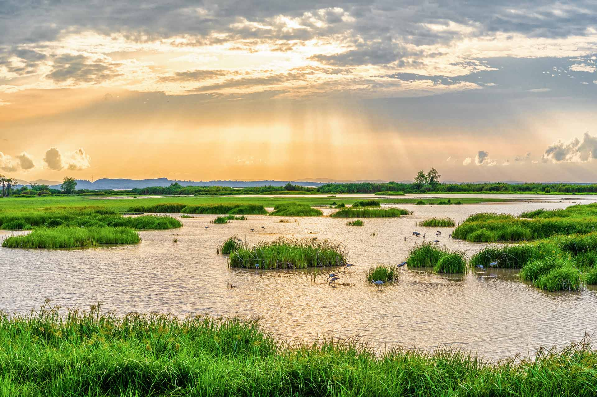

Páramo
El páramo es un ecosistema único de alta montaña que se encuentra entre los 3,000 y 4,500 metros sobre el nivel del mar. En Cundinamarca y Boyacá, los páramos como el de Sumapaz, Chingaza y Rabanal son de gran importancia ecológica. Este ecosistema es vital para la captación y regulación de agua, sirviendo como fuente para numerosos ríos y lagunas.

Bosques Andinos
Los bosques andinos son uno de los ecosistemas predominantes en Cundinamarca y Boyacá, ubicándose entre los 1,800 y 3,000 metros sobre el nivel del mar. Estos bosques están caracterizados por una gran diversidad de flora, incluyendo especies de árboles como el roble, el arrayán y el encenillo, y una rica variedad de fauna, como aves endémicas, mamíferos y reptiles. Estos bosques juegan un papel crucial en la regulación del clima y el ciclo del agua.

Bosque de Niebla
Estos bosques, situados en altitudes entre los 2,000 y 3,500 metros, se caracterizan por una alta humedad y frecuentes neblinas. Son ecosistemas muy biodiversos, con una gran variedad de epífitas, orquídeas y bromelias. La fauna incluye mamíferos como el puma y el tigrillo, así como numerosas especies de aves y anfibios. Los bosques de niebla son esenciales para la conservación del agua y la biodiversidad.

Humedales
Cundinamarca y Boyacá cuentan con numerosos cuerpos de agua, como la Laguna de Tota y la Laguna de Fúquene. Estos ecosistemas acuáticos son cruciales para la biodiversidad local y sirven como hábitat para aves acuáticas, peces y anfibios. Los humedales son también importantes para la regulación hídrica y la filtración de contaminantes.